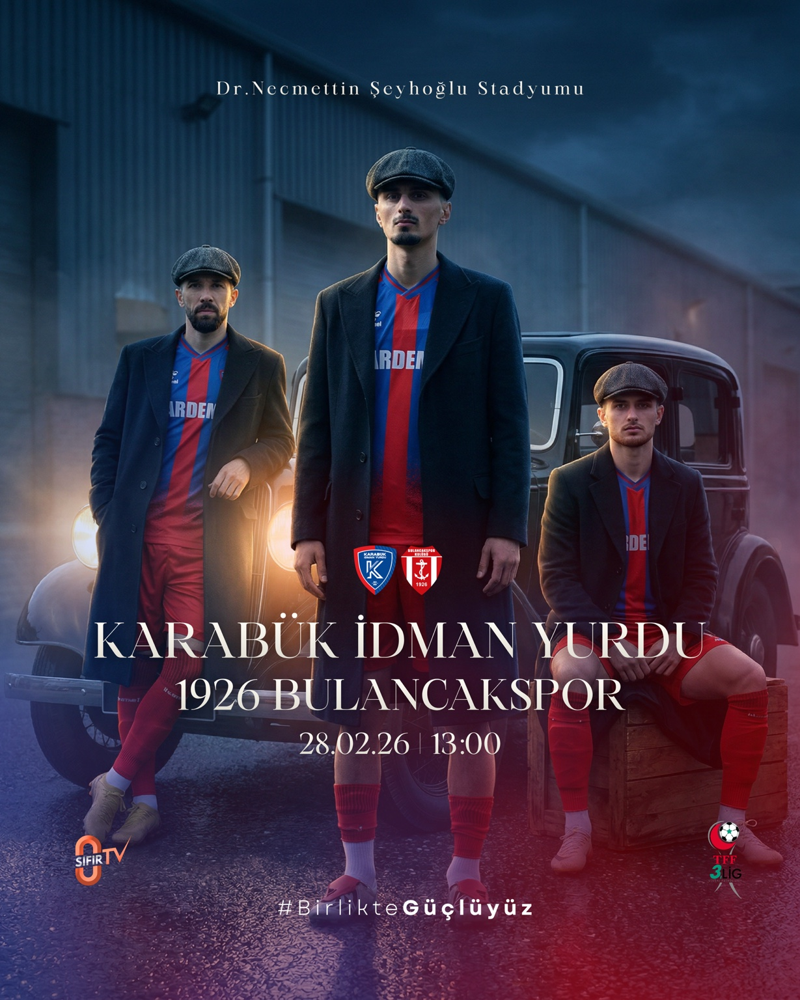
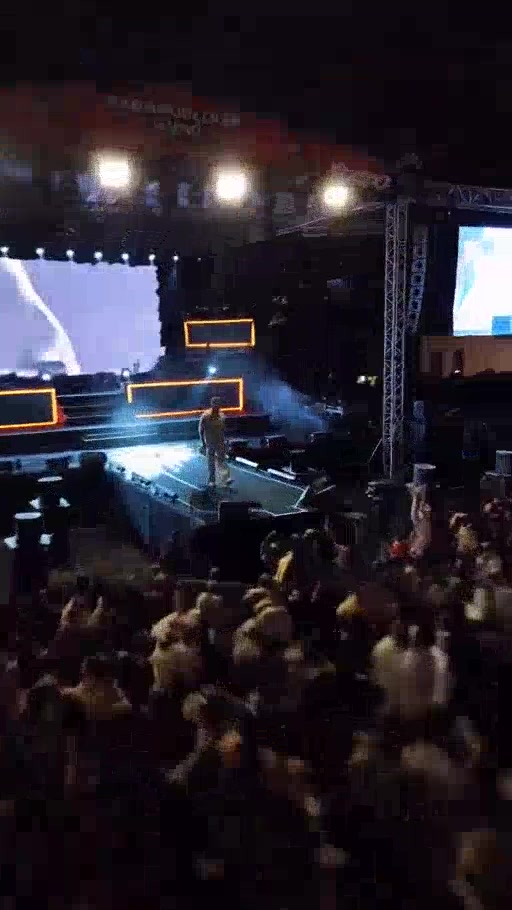

SOSYAL MEDYA · SPOR · 2025—2026Karabük İdman YurduMaç Günü · Transfer · Taraftar · Tasarım↗
KONSER · REELSKonser İçerikleriSahne · Backstage · Dikey VideoSEFO · Hakan Peker · Dedublüman · Poizi↗
GRAFİK TASARIM · SOSYAL MEDYATasarım ÇalışmalarıSosyal Medya · Outdoor · Kampanya · KurumsalSeçili marka çalışmaları↗